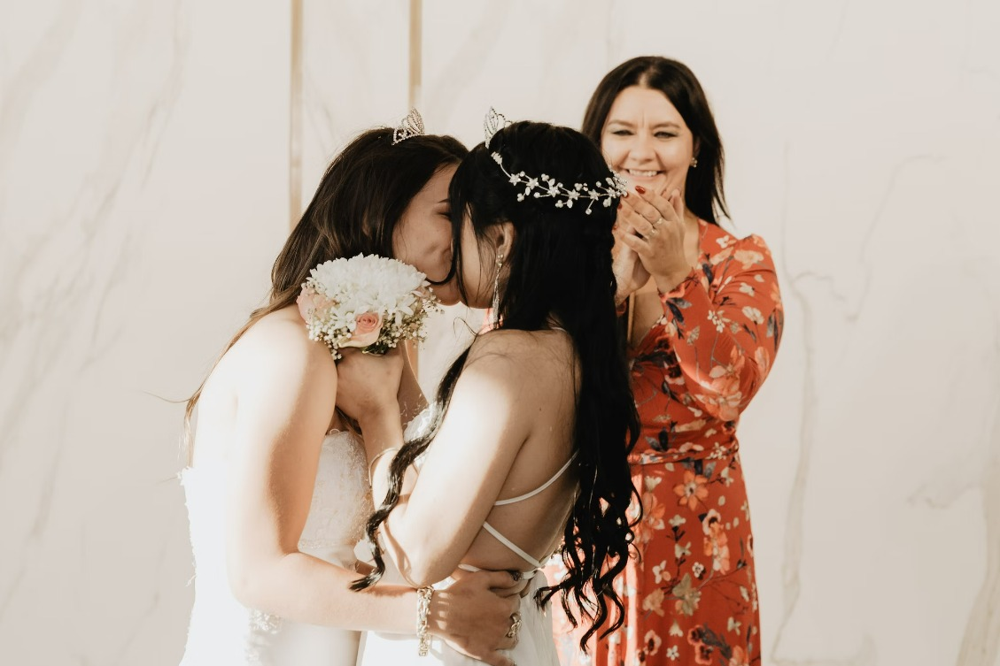
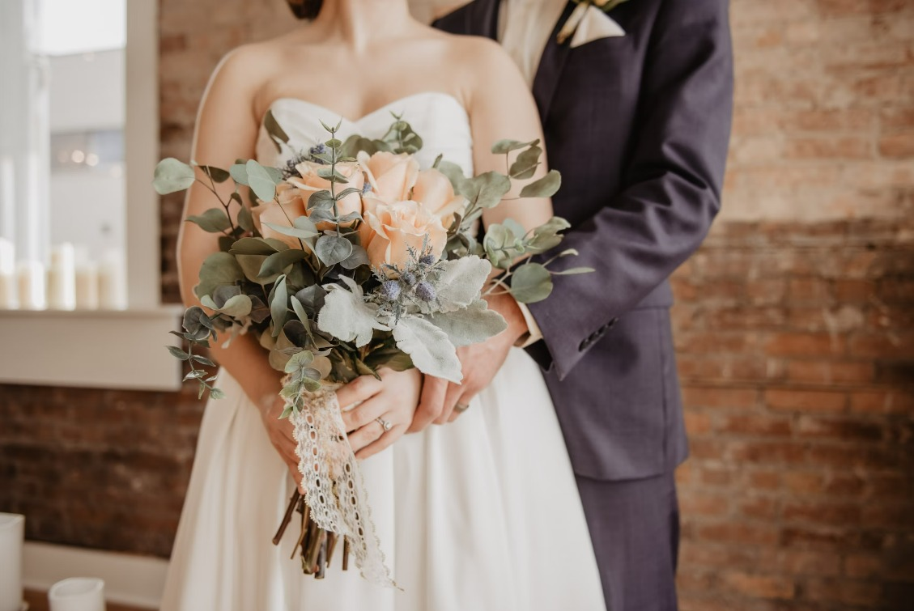

A Grande Estreia do Amor: Casamento ao Estilo de Cinema
Se você é um amante do cinema e sonha em ter um casamento repleto de drama, romance e muita emoção, então o tema "Casamento ao Estilo de Cinema" é perfeito para você! Neste post, vamos explorar ideias criativas para transformar o seu grande dia em uma verdadeira obra-prima cinematográfica.

1. Convites de Ingressos:
Comece a criar expectativas desde o convite! Desenvolva convites que se assemelhem a ingressos de cinema, com detalhes do "filme" do seu casamento. Adicione elementos como a data do "lançamento" e o local da "estreia". Isso não só será inovador, mas também uma lembrança única para os seus convidados.
2. Tapete Vermelho e Fotografia Glamorosa:
Recrie a magia do tapete vermelho para receber os seus convidados. Contrate um fotógrafo que capture cada momento como uma cena de cinema. Explore diferentes ângulos e poses dignas de uma estrela de cinema. Essas fotos serão verdadeiras lembranças dignas de um Oscar!
3. Decoração com Tema de Cinema:
Transforme o local da cerimônia e recepção em um cenário digno de Hollywood. Utilize elementos como rolos de filme, claquetes, e pôsteres de filmes clássicos para decorar. Considere até mesmo criar uma área de fotos com adereços divertidos relacionados ao cinema, como óculos de sol glamorosos e boás de penas.
4. Cardápio Cinematográfico:
Incorpore o tema do cinema ao cardápio do seu casamento. Crie "lanches de cinema" como pipoca gourmet, nachos e milkshakes. Inclua também um bar de coquetéis temáticos, inspirados em filmes famosos. Surpreenda seus convidados com uma experiência gastronômica única e deliciosa.
5. Trilha Sonora Personalizada:
Crie uma trilha sonora personalizada que conte a história do seu relacionamento. Escolha músicas que tenham significado especial para vocês, desde a entrada até a saída. Você pode até mesmo incorporar músicas de filmes icônicos para adicionar um toque extra de drama e emoção.
6. Cerimônia de Premiação:
Transforme a hora dos votos em uma cerimônia de premiação. Crie estatuetas personalizadas para premiar o melhor voto, a melhor dança, ou até mesmo o melhor discurso. Isso adicionará um elemento lúdico e divertido à cerimônia.
Conclusão:
Um casamento ao estilo de cinema oferece uma experiência única e memorável para os noivos e convidados. Desde os convites até a cerimônia e recepção, cada detalhe pode ser uma oportunidade de expressar o amor de vocês de uma maneira única e cinematográfica. Então, ajuste a sua gravata borboleta ou coloque seu vestido de gala, porque o tapete vermelho está estendido e a grande estreia do seu amor está prestes a começar!
